System Flowchart
Mobile App: Scam Image Detection
User Flow (การทำงานฝั่งผู้ใช้)

ดู Mermaid source
graph TD
Start([เริ่มใช้งาน]) --> Home[หน้าแรก]
Home -- "เลือกเมนู" --> Gallery[เลือกรูปภาพจาก Gallery]
Gallery --> Image[ปรับแต่ง / Crop รูป]
Image -- "PNG" --> Preview[แสดง Preview รูปภาพ]
Preview -- "upload images" --> CheckBtn[/กดปุ่มตรวจสอบ/]
CheckBtn --> S3(("upload img Cloud Storage"))
S3 --> Analyzing{"ระบบกำลังวิเคราะห์... (System Logic)"}
Analyzing -- "สำเร็จ" --> Result["หน้าผลลัพธ์ (Risk Score + Evidence)"]
Analyzing -- "ล้มเหลว" --> Error[แจ้งเตือนข้อผิดพลาด]
Result --> AutoSave[(Auto-Save ลง DB)]
AutoSave --> Action{Action}
Action -- "แชร์" --> Share[แชร์ผลลัพธ์]
Action -- "ไม่แชร์" --> End([จบการทำงาน])
Share --> End
Error --> Options{ทางเลือก}
Options -- "นำเข้ารูปใหม่" --> ImportMethod
Options -- "ยกเลิก" --> End
%% Styling
classDef blue fill:#0050ef,stroke:#001DBC,color:#fff
classDef green fill:#d5e8d4,stroke:#82b366,color:#000
classDef yellow fill:#fff2cc,stroke:#d6b656,color:#000
classDef purple fill:#e1d5e7,stroke:#9673a6,color:#000
classDef cloud fill:#dae8fc,stroke:#6c8ebf,color:#000
classDef error fill:#f8cecc,stroke:#b85450,color:#000
class Start,End blue
class Home,Gallery,Image,Preview,Result,Error,Share green
class Analyzing,Action,Options yellow
class CheckBtn,RetCache,Gen purple
class S3,AutoSave cloud
คำอธิบาย User Flow
- เริ่มต้น (Start): ผู้ใช้เข้าสู่แอปพลิเคชัน
- หน้าแรก (Home): แสดงเมนูหลัก
- นำเข้าภาพ (Import): เลือกรูปภาพที่น่าสงสัยจากคลังภาพ (Gallery) เพื่อเตรียมอัปโหลด
- ปรับแต่ง (Edit): Crop หรือปรับขนาดภาพก่อนส่ง (PNG)
- ตรวจสอบ (Check): กดปุ่มตรวจสอบเพื่อส่งข้อมูล
- ประมวลผล (Processing): อัปโหลดภาพไปยังระบบจัดเก็บคลาวด์ (Cloud Storage) และเข้าสู่กระบวนการวิเคราะห์ System Logic
- ผลลัพธ์ (Result):
- สำเร็จ: แสดงคะแนนความเสี่ยง (Risk Score) และหลักฐาน (Evidence) จากนั้น Auto-Save ลงฐานข้อมูล
- ล้มเหลว: แจ้งเตือนข้อผิดพลาด และให้ทางเลือก (ลองใหม่ หรือ ยกเลิก)
- Action: ผู้ใช้เลือกแชร์ผลลัพธ์ หรือจบการทำงาน
System Logic (การทำงานฝั่งระบบ)

ดู Mermaid source
graph TD
%% Source & Initial Validation
S3([Cloud Storage]) -- import_image --> Receive[/รับไฟล์รูปภาพ/]
Receive --> NodeValidate{ตรวจสอบไฟล์ Valid Image}
NodeValidate -- ไม่ใช่รูปหรือไฟล์เสีย --> Reject[คืนค่า Error]
NodeValidate -- ถูกต้อง --> Preprocess[Preprocessing]
%% Cache Mechanism
Preprocess --> NodeCache{เคยตรวจรูปนี้ไหม Redis}
NodeCache -- Hit_เคยตรวจ --> RetCache[ดึงผลเก่าจาก DB]
%% Processing Tasks (ส่วนที่เป็นข้อความสีดำบนพื้นเทา)
NodeCache -- Miss_ไม่เคย --> Task1[Task 1 Metadata]
Task1 --> Task2[Task 2 OCR]
Task2 --> Task3[Task 3 Forgery]
%% Error Handling & Logic Branching
Task3 --> PartialFail[Partial Failure Timeout 5s]
PartialFail --> NodeKeyword{เจอ Keyword อันตราย}
NodeKeyword -- ไม่เจอความเสี่ยงชัดเจน --> Task4[Task 4 Source]
Task4 --> NodeSearch{ค้นหารูปในเน็ต}
NodeSearch -- มากกว่าหรือเท่ากับ 3 --> SourceHigh[เจอรูปมีที่มามากกว่า 3 ที่]
NodeSearch -- น้อยกว่าหรือเท่ากับ 1 --> SourceLow[เจอรูปมีที่มาน้อยกว่า 1 ที่]
SourceLow --> Task5[Task 5 AI-Gen]
%% Aggregation Point (Collector)
Collector(( ))
NodeKeyword -- เจอ --> Collector
SourceHigh -- เจอ --> Collector
Task5 -- เจอ --> Collector
%% Final Calculation & Storage
Collector --> Calc[คำนวณคะแนนความเสี่ยง]
Calc --> Gen[สร้างคำอธิบายผลลัพธ์]
Gen --> DB[(บันทึกลง Database)]
%% Output
DB --> Output[/ส่ง JSON กลับ Client/]
RetCache --> Output
%% Styling (กำหนดสีข้อความเป็นสีดำด้วย color:#000)
style S3 fill:#dae8fc,stroke:#6c8ebf,color:#000
style Receive fill:#0050ef,color:#fff
style NodeValidate fill:#f5f5f5,stroke:#666,color:#000
style Reject fill:#f8cecc,stroke:#b85450,color:#000
style Preprocess fill:#dae8fc,stroke:#6c8ebf,color:#000
style NodeCache fill:#ffe6cc,stroke:#d79b00,color:#000
style RetCache fill:#e1d5e7,stroke:#9673a6,color:#000
style Task1 fill:#f5f5f5,stroke:#666,color:#000
style Task2 fill:#f5f5f5,stroke:#666,color:#000
style Task3 fill:#f5f5f5,stroke:#666,color:#000
style Task4 fill:#f5f5f5,stroke:#666,color:#000
style Task5 fill:#f5f5f5,stroke:#666,color:#000
style PartialFail fill:#d5e8d4,stroke:#82b366,color:#000
style NodeKeyword fill:#ffe6cc,stroke:#d79b00,color:#000
style NodeSearch fill:#ffe6cc,stroke:#d79b00,color:#000
style SourceHigh fill:#d5e8d4,stroke:#82b366,color:#000
style SourceLow fill:#d5e8d4,stroke:#82b366,color:#000
style Calc fill:#d5e8d4,stroke:#82b366,color:#000
style DB fill:#ffe6cc,stroke:#d79b00,color:#000
style Output fill:#0050ef,color:#fff
คำอธิบาย System Logic
- Input: รับไฟล์รูปภาพจากระบบคลาวด์สตอเรจ (Cloud Storage)
- Validation: ตรวจสอบว่าไฟล์รูปภาพถูกต้องหรือไม่
- หากเสีย/ไม่ใช่รูป: Reject คืนค่า Error
- หากถูกต้อง: ส่งไป Preprocessing
- Preprocessing: ปรับขนาด (Resize) และ Normalize ภาพ
- Caching: ตรวจสอบ Hash ใน Redis
- Hit: เคยตรวจแล้ว ให้ดึงผลเก่าจาก Database ส่งคืนทันที
- Miss: ไม่เคยตรวจ ให้เข้าสู่ Pipeline การตรวจสอบ
- Analysis Tasks:
- Task 1 Metadata: ดึงข้อมูล EXIF/GPS
- Task 2 OCR: อ่านข้อความในภาพ
- Task 3 Forgery: ตรวจสอบการตัดต่อ (Semantic Segmentation)
- Partial Failure: ดักจับกรณี Timeout
- Keyword Check: ตรวจสอบคำเสี่ยงสูง
- Task 4 Source: ค้นหาที่มาของภาพ
- หากพบน้อย (<=1): ความเสี่ยงต่ำ ส่งไปตรวจ AI-Gen (Task 5)
- หากพบมาก (>=3): ความเสี่ยงสูง
- Scoring: คำนวณคะแนนความเสี่ยงรวม (Overall Risk Score) ตาม Hybrid Worst-Case Trigger จากผลลัพธ์ทุกมิติ
- Output: สร้างคำอธิบาย บันทึกลง Database และส่ง JSON กลับ Client